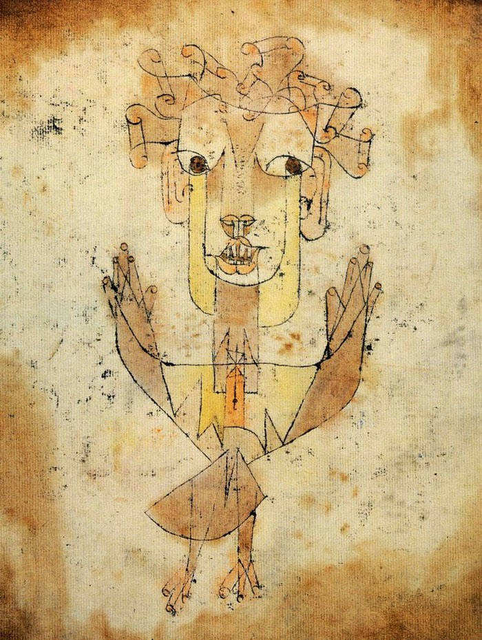
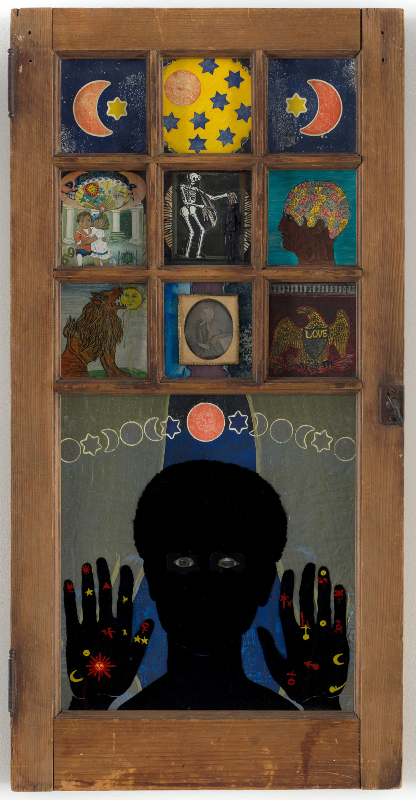

W4: Afrofuturism
Unlike previous eras, today’s artists can wield the power of digital media, social platforms, digital video, graphic arts, gaming technology, and more to tell their stories, share their stories, and connect with audiences inexpensively—a gift from the sci-fi gods, so to speak, that was unthinkable at the turn of the century. The storytelling gatekeepers vanished with the high-speed modem, and for the first time in history, people of color have a greater ability to project their own stories. This tug-and-pull debate over black people controlling their image shifts considerably when a fledgling filmmaker can shoot his sci-fi web series on a $500 DV cam, post it on YouTube, and promote it on Instagram and Twitter.
—Ytasha L. Womack, Afrofuturism: The World of Black Sci-Fi and Fantasy Culture: 10.
What I like about Afrofuturism is it helps create our own space in the future; it allows us to control our imagination . . . An Afrofuturist is not ignorant of history, but they don’t let history restrain their creative impulses either.
—Raynaldo Anderson, cited in Ytasha Womack, Afrofuturism
I. Angels of History

A Klee drawing named “Angelus Novus” shows an angel looking as though he is about to move away from something he is fixedly contemplating. His eyes are staring, his mouth is open, his wings are spread. This is how one pictures the angel of history. His face is turned toward the past. Where we perceive a chain of events, he sees one single catastrophe that keeps piling ruin upon ruin and hurls it in front of his feet. The angel would like to stay, awaken the dead, and make whole what has been smashed. But a storm is blowing from Paradise; it has got caught in his wings with such violence that the angel can no longer close them. The storm irresistibly propels him into the future to which his back is turned, while the pile of debris before him grows skyward. This storm is what we call progress.
—Walter Benjamin, “Theses on the Philosophy of History” (1939), in Illuminations: Essays and Reflections. Edited and with an introduction by Hannah Arendt (New York: Schocken Books, 1969).
Jason Farago, “How Klee’s ‘Angel of History’ Took Flight” (BBC Culture, 6 April 2016)
The Last Angel of History (John Akomfrah/Black Audio Film Collective, 1995)
Mark Dery, “Black to the Future: Interviews with Samuel R. Delaney, Greg Tate, and Tricia Rose,” in Flame Wars: The Discourse of Cyberculture (Durham: Duke University Press, 1994.
Kodwo Eshun, “Further Considerations on Afrofuturism” The New Centennial Review, vol. 3, no. 2, Summer2003, pp. 287-302.
Films
Space Is The Place (Sun Ra, 1974)
The Last Angel of History (John Akomfrah, 1996)
Hidden Figures (Theodore Melfi, 2016)
Afrofuturism: The Origin Story (Smithsonian Channel, 2022)
Black Panther (Ryan Coogler, 2018); Black Panther: Wakanda Forever (Ryan Coogler, 2022)
References
Paul Gilroy, The Black Atlantic: Modernity and Double Consciousness (Cambridge: Harvard University Press, 1993).
Kodwo Eshun, More Brilliant Than The Sun: Adventures in Sonic Fiction (London: Quartet Books, 1998).
Ytasha L. Womack, Afrofuturism: The World of Black Sci-Fi and Fantasy Culture (Chicago: Lawrence Hill Books, 2013).
II. Digital Afrofuturism
 ]
]
“The Futurist Digital Collages by Manzel Bowman”
African Digital Art
!Olalekan Jeyifous, Lagos 2180 (2013)
{kind=link}
Olalekan Jeyifous, Shanty Mega-Structures
III. Feminist Afrofutures

Nicole D. Sconiers, “The State of Black Sci-Fi 2012: My Tribute to Afrofuturist Betye Saar”
Martine Syms, “The Mundane Afrofuturist Manifesto” (2013)
The African Desperate (Martine Syms, 2022). Currently streaming on MUBI and Apple TV